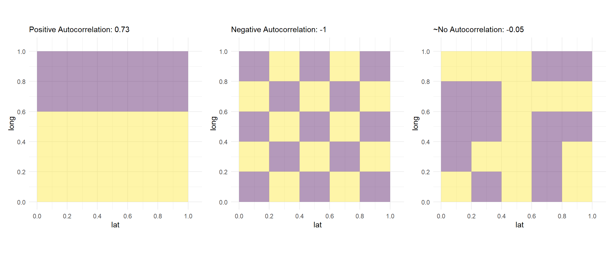

Spatial Autocorrelation
Congratulations, you have defined a research question, developed a theory, collected spatial data, visualized your variables of interest with a map, and now you are ready to estimate a causal effect or make some prediction about a spatial relationship. The logical first step is to estimate the workhorse model of social science: ordinary least squares. If your variables contain spatial autocorrelation, which is common in most spatial relationships, the OLS equation for standard errors will not be appropriate, though. This means that your standard errors will be incorrect, resulting in incorrect statistical inference. The same phenomenon is seen with time series data where methods such as \(\rho\)-transforming the data or estimating Prais-Winston or Newey-West standard errors is needed to draw accurate inferences. Similar methods can be used to purge spatial autocorrelation from our models. While in time series data, autocorrelation refers to the residuals in time period \(t_{-1}\) being correlated with the residuals in time period \(t\) (Bailey 2021), in spatial data, autocorrelation refers to the residuals in unit \(i\) being correlated with the residuals in unit \(j\).
In this chapter, we move away from the applied example of education and poverty in Brooklyn in order to introduce one of the most important concepts related to spatial regression: spatial autocorrelation. We start by presenting the theoretical concept of spatial autocorrelation, show how to detect it, and run a simulation to illustrate it. We then introduce a naive OLS model of a spatial relationship and discuss how spatial autocorrelation violates the Gauss-Markov assumption that errors are not correlated with each other. By the end of this chapter you should be comfortable with the concept of spatial autocorrelation, how to detect it, and why it violates the Gauss-Markov assumptions.
Detecting Spatial Autocorrelation
Here, we present the concepts of global and local spatial autocorrelation and detail formal tests to detect them. We also introduce the core packages for working with spatial regression models in R: library(spdep) and library(spatialreg). We will apply the tests discussed in this chapter to our Brooklyn example in chapter four.
Global vs. Local Spatial Autocorrelation
Spatial autocorrelation measures the correlation of a variable with itself across space, similar to how serial autocorrelation measures the correlation of a variable with itself across time. Variables that are spatially autocorrelated can either be positively or negatively autocorrelated. If spatial autocorrelation is positive, locations close together have similar, approaching the same, values. If spatial autocorrelation is negative, locations close together have more dissimilar, approaching opposite, values.
There are two levels of spatial autocorrelation (DGES 2022 & Darmofal 2015): global and local. Global spatial autocorrelation quantifies the degree to which areas that are close by tend to be more alike (Darmofal 2015). This is generally what we mean when we use the term spatial autocorrelation. When we discuss global - as opposed to local autocorrelation - we are talking about the degree of clustering, not on the specific locations of possible clusters. In other words, global autocorrelation is how similar units are, on average, to their neighbors. Detecting and accounting for global autocorrelation is the first step towards accurate statistical inference in spatial regression models.
In contrast to global autocorrelation, local autocorrelation, also called local indicators of spatial association, or LISA, tells us where clustering is (Anselin 1995). Some clusters of units may exhibit positive autocorrelation while some may exhibit negative autocorrelation and a third group of units may have no autocorrelation at all. Global autocorrelation does not account for this heterogeneity and provides only one unified test statistic for global spatial autocorrelation. LISA, however, estimates localized spatial autocorrelation. Only calculating and taking into account global autocorrelation assumes that spatial autocorrelation is homogeneous throughout the distribution of spatial units. This assumption may not hold, so a local test for autocorrelation should always be used. Further, even if our variable does not exhibit global autocorrelation or clustering, we can use LISA to find possible localized clusters (Anselin 1995). The exact tests for global and local autocorrelation are discussed next.
Global Morans I Test
The first test that we consider is Moran’s \(I\) test. Moran’s \(I\) test, created by Australian statistician P. A. P. Moran is a formal test for spatial autocorrelation (Moran 1950). Global Moran’s \(I\) statistic measures spatial autocorrelation simultaneously based on both variable locations and variable values (Darmofal 2015). Given a set of variables and an associated attribute, Moran’s \(I\) indicates if the pattern of spatial autocorrelation is clustered, dispersed, or random (Darmofal 2015).
The null hypothesis for this test is that there is random disturbances, or no spatial autocorrelation, and a statistically significant Moran’s \(I\) estimate rejects that null hypothesis. As an introductory statistics refresher, \(p\)-values are numerical approximations of the area under the curve for a known distribution, limited by the test statistic. In other words, \(p\)-values for Moran’s \(I\) statistic tell us the probability that we would have seen the extremity of the degree of autocorrelation that we have seen given there was truly no autocorrelation. Similar to standard OLS models, a \(p\)-value \(<.05\) is evidence that we can reject the null hypothesis that there is no spatial autocorrelation. While this is the conventional confidence level, researchers can also consider \(p<.01\) or \(p<.001\) confidence levels to be even more confident that there is, in fact, spatial autocorrelation. Usually we want to see a \(p\)-value to be as low as possible so that we can be more confident that are result is not due to random chance, but, with testing for spatial autocorrelation, this is perhaps a mistake. We should try to be as aware of possible spatial autocorrelation as possible, meaning we may want to have a confidence level closer to \(p<.1\). Setting the threshold \(p\)-value higher means that we are more likely to reject the null hypothesis for spatial autocorrelation and more likely to choose to estimate some type of spatial regression model to account for even modestly autocorrelated residuals.
Moran’s Global \(I\) is calculated based on a weighted matrix with unit \(i\) and neighbor \(j\) (Darmofal 2015). Similarities between units \(i\) and \(j\) are calculated as the product of the differences between \(y_i\) and \(y_j\) with the overall mean (Darmofal 2015).
\[I=\frac{N}{W}\frac{\sum_i^{N}\sum_j^{N}w_{ij}(y_i-\bar{y})(y_j-\bar{y})}{\sum_i^{N}(y_i-\bar{y})}\]
- \(N\) is the number of units indexed by \(i\) and \(j\)
- \(y\) is the variable of interest
- \(\bar{y}\) is the average of the variable of interest
- \(w_{ij}\) is a matrix of spatial weights with zeroes on the diagonal
- \(W\) is the sum of all \(w_{ij}\) such that \({W=\sum _{i=1}^{N}\sum _{j=1}^{N}{w_{ij}}}\)
Defining the exact weights matrix is vital to calculating Moran’s \(I\) because the value of \(I\) depends on the assumptions built into the spatial weights matrix \(w_{ij}\) (Darmofal 2015). The spatial weights matrix constrains the number of neighbors being considered and weights appropriately based on those constraints. In other words, we expect a unit, \(i\)’s closest neighbors to be the most similar to \(i\), while further distant neighbors may not be at all related.
There are several methods that can be used to assign weights. The most basic approach to weighting is to assign a weight of 1 if neighbors are nearby and a weight of 0 otherwise (DGES 2022). Another, slightly more advanced method, is to assign weights based on a \(k\) nearest neighbors approach where the \(k\) nearest neighbors receive a weight of 1 and 0 otherwise (DGES 2022). The decision of weighting is important because the estimate, and resulting \(p\)-value of Moran’s \(I\) statistic is heavily dependent upon weighting. This means our inference of whether or not our data has spatial autocorrelation is dependent, partly, upon how we choose to weight similarities and differences between neighbors. library(spdep) makes this process computationally easy and offers functions to weight based on each option enumerated above. spdep::poly2nb() evaluates the spatial distribution of a variable to estimate how similar a unit, \(i\) is to their neighbor, \(j\). spdep::nb2listw() then constructs the weights based on these estimated similarities. Each function takes specific arguments concerning how to weight, how much to weight nearby neighbors, and whether to weight far away neighbors as a low number or zero. For the \(k\) nearest neighbors approach, spdep::knearneigh() and spdep::knn2nb() can construct the weights for neighbors, only if you have point data.
Calculating Moran’s \(I\) statistic by hand is a quite cumbersome process, so we focus on the function spdep::moran.test() which takes the result of the above two functions and returns the estimate of \(I\) and the resulting \(p\)-value. The sign of the estimate tells us the direction of autocorrelation and the absolute value tells us the degree. If the estimate of \(I\) is positive, spatial autocorrelation is positive and if the estimate of \(I\) is negative, spatial autocorrelation is negative. The higher the absolute value of \(I\), the more severe the degree of autocorrelation. Importantly, global Moran’s \(I\) is bounded by \([-1,1]\) with -1 being perfect negative autocorrelation and 1 being perfect positive autocorrelation (Darmofal 2015). If the resulting \(p\)-value is \(p<.05\), we can reject the null hypothesis that there is no spatial autocorrelation. Once we have evidence that our dependent variable exhibits a statistically significant degree of spatial autocorrelation, we can, and should, consider utilizing a spatial regression method.
Local Spatial Autocorrelation (LISA)
One weakness of Moran’s global \(I\) is that it is assumes homogeneity in spatial autocorrelation. The global \(I\) statistic will not tell us if different clusters of neighbors are autocorrelated significantly differently than other clusters of neighbors, resulting in an estimate of \(I\) and its \(p\)-value not accurately characterizing localized spatial autocorrelation. For a better test statistic, we turn to LISA (Anselin 1995), or local indicators of spatial association which calculates Moran’s \(I\) for each individual spatial unit based on the following formula:
\[I=\sum_{i=1}^{N}{\frac{I_{i}}{N}}\]
Where:
- \(I_i\) is the local Moran’s I statistics and \(N\) is the number of spatial units.
We use LISA when we believe that the assumption that autocorrelation is constant across all spatial units is not accurate for our data. The resulting measure identifies localized clusters of spatial autocorrelation (Anselin 1995). Beyond using local Moran’s \(I\) when the homogeneity assumption is violated, there are several benefits of calculating LISA. When we are thinking about local spatial autocorrelation, there are four different types of cluster relationships (Anselin 2020) that only LISA will show: High-High, or units that have high values of a variable with neighbors that also have high values; High-Low, or units that have high values of a variable with neighbors that have low values; Low-High, or units that have low values of a variable with neighbors that have high values; and Low-Low, or units that have low values of a variable with neighbors that also have low values. Local Moran’s \(I\), calculated with spdep::localmoran() can identify these different types of clusters, map them, and better characterize the spatial autocorrelation that we are seeing in our variable. Local Moran’s \(I\) can also be used to identify local clusters and outliers that are surrounded by opposite values (Anselin 1995).
Just as library(spdep) makes calculating global autocorrelation straightforward and easy, LISA is easily calculated with localmoran(). As shown in the applied section in the fourth chapter, we can visualize local autocorrelation easily with library(ggplot2). The main goal of utilizing methods to calculate LISA is to determine the best choice of model selection, as not all spatial models account for localized spatial autocorrelation.
Intuition and Simulation
Here we see three renditions with different distributions of outcome variables in a 5x5 matrix of grid cells.
The first matrix has two clear clusters of data. Another way to look at it in the context of discussion above is - the neighbors have values very similar to each other in the two parts of the matrix. Hence, we see a high positive value of Global Moran as given in above the figure.
Similarly, in the second figure, we see that all of the immediate neighbors (that is those that share boundary with a cell), have values different from the cell under observation. Consequently, we see a global Moran’s \(I\) statistic of -1.
In the third figure we have a bit more random distribution of values. Thus, we see a global Moran’s \(I\) statistic close to 0.
To understand the concept of Local Moran’s \(I\), we simulate a different matrix grid. This time, the outcome variable is drawn from a continuous multivariate normal distribution.
# The code for this section is adapted from: https://rpubs.com/jguelat/autocorr
#Define function to draw random samples from a multivariate normal
# distribution
rmvn <- function(n, mu = 0, V = matrix(1)) {
p <- length(mu)
if (any(is.na(match(dim(V), p))))
stop("Dimension problem!")
D <- chol(V)
t(matrix(rnorm(n * p), ncol = p) %*% D + rep(mu, rep(n, p)))
}
# Set up a square lattice region
simgrid <- expand.grid(1:20, 1:20)
n <- nrow(simgrid)
# Set up distance matrix
distance <- as.matrix(dist(simgrid))
# Generate random variable
phi <- 0.05
X <- rmvn(1, rep(0, n), exp(-phi * distance))
# Visualize results
Xraster <- rasterFromXYZ(cbind(simgrid[, 1:2] - 0.5, X))
par(mfrow = c(1, 2))
#plot(1:100, exp(-phi * 1:100), type = "l", xlab = "Distance", ylab = "Correlation")
plot(Xraster, main = "Distribution")
f <- matrix(c(0,1,0,1,0,1,0,1,0), nrow=3)
plot(MoranLocal(Xraster, w=f), main = "Local Moran I")
The plot on the left is the distribution of a continuous random variable on a 20x20 matrix. The greener the cell the higher the value.
The plot on the right is a matrix of the same dimension showing Local Moran’s \(I\) for each cell. While the interpretation is a bit tricky, we can use the heuristic that the greener the cell, the more similar the immediate boundary sharing neighbors.
A Naive Model of Spatial Data
Now that we have presented spatial autocorrelation and the tests used to detect it, let’s discuss why OLS is inappropriate to use when modeling spatial relationships. Consider the basic multiple regression model:
\[Y_{i}=\alpha + \beta\ X_{i} + \delta \Lambda' + \nu_{i}\]
In this model, we have our dependent variable, or outcome concept, \(Y_i\), the intercept, \(\alpha\), or the average of \(Y\) when all predictor variables are 0, \(\beta\), the coefficient on our main predictor variable, \(X_i\), \(\delta \Lambda '\), a term for the matrix of covariates and their estimated effects on our dependent variable, and \(\nu_i\), the error term of our model. Knowledge of the properties of OLS is assumed as a prerequisite and a more thorough examination of the Gauss-Markov assumptions is outside the scope of this guide on spatial regression, but, as a refresher, we present the Gauss-Markov assumptions for OLS to be the best linear unbiased estimator below (Greene 2018).
- Assumption I: Linearity
- \(y=X\beta+\epsilon\)
- Assumption II: Full Rank
- \(X\) is a \(n\times k\) matrix with rank \(k\)
- Assumption III: Exogeneity
- \(E[\epsilon_{i}|X]=0\)
- Assumption IV: Homoscedasticity and No Autocorrelation
- \(E[e_ie_j|X]=0\)
- Assumption V: Data Generating Process
- \(X\) may be fixed or random
- Assumption VI: Errors Normally Distributed
- \(\epsilon | X \sim N[0, \sigma^2I]\)
While its important all of these assumptions are met, the key assumption to notice for our purposes here is Assumption IV: Homoscedasticity and No Autocorrelation. In order for OLS to be the best linear unbiased estimator (BLUE), the errors must have constant variance and not be correlated with one another. Errors that do not have constant variance are called heteroscedastic errors. Autocorrelation refers to errors being correlated with one another. In the time series context, as mentioned above, autocorrelation refers to when the errors in \(t_1\) are correlated with the errors in \(t_{-1}\) (Bailey 2021). This is a problem for spatial units as well. As Waldo Tobler (1970) says, “everything is related to everything else, but near things are more related than distant things.” This means that we can expect clusters in our distribution of our variables of interest across our spatial units. If our data exhibits this type of clustering, we violate at least Assumption IV and possibly a few others.
For example, look at the Brooklyn maps in chapter one. The northeast of Brooklyn is a cluster of college educated New Yorkers, suggesting some degree of spatial autocorrelation. When our data is spatially autocorrelated, as long as the other assumptions are not violated, OLS will give us unbiased estimates of \(\beta\), but our standard errors will be inaccurate due to the no autocorrelation assumption being broken. Using a naive OLS model in this way will lead to possible incorrect statistical inference. More specifically, \(\nu_i\) in the model above contains the spatial autocorrelation between units \(i\) and \(j\) that make OLS inappropriate for estimating a relationship between \(X_i\) and \(Y_i\). The resulting correlation of the error term must be obviated before we can estimate correct standard errors.
Staking ones academic reputation or making policy decisions based on a naive estimate of a spatial relationship risks a researcher losing credibility due to inaccuracy. Further, false inference could lead a city government to build a new police station in a sub-optimal location based on a poorly estimated spatial model. Spurious relationships are also likely to be detected because both the dependent and the independent variables in the model are correlated spatially. Due to the risks of inaccuracy, it is vitally important that researchers do not utilize basic OLS models when estimating a relationship that exhibits spatial autocorrelation. Spatial autocorrelation, and spatial regression more broadly, is largely an issue of ensuring accuracy in statistical inference made from our model results.
The goal of this section was to introduce the concepts of spatial autocorrelation, the tests to detect spatial autocorrelation, review the Gauss-Markov assumptions, and show why researchers need to be careful when estimating spatial relationships that exhibit spatial autocorrelation. We now turn to models that can account for spatial autocorrelation.